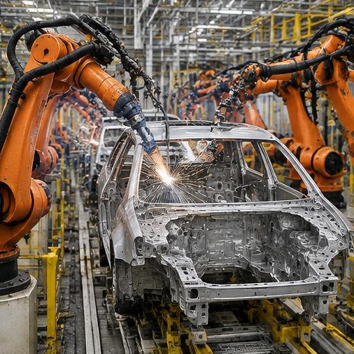
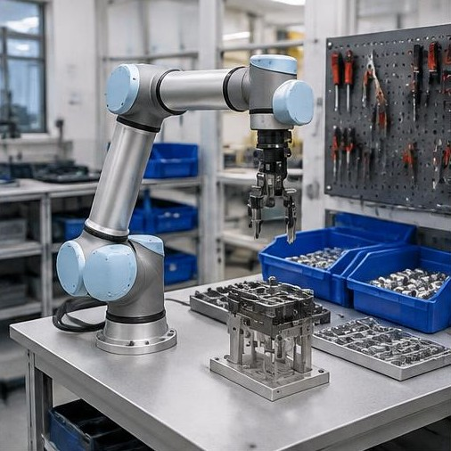
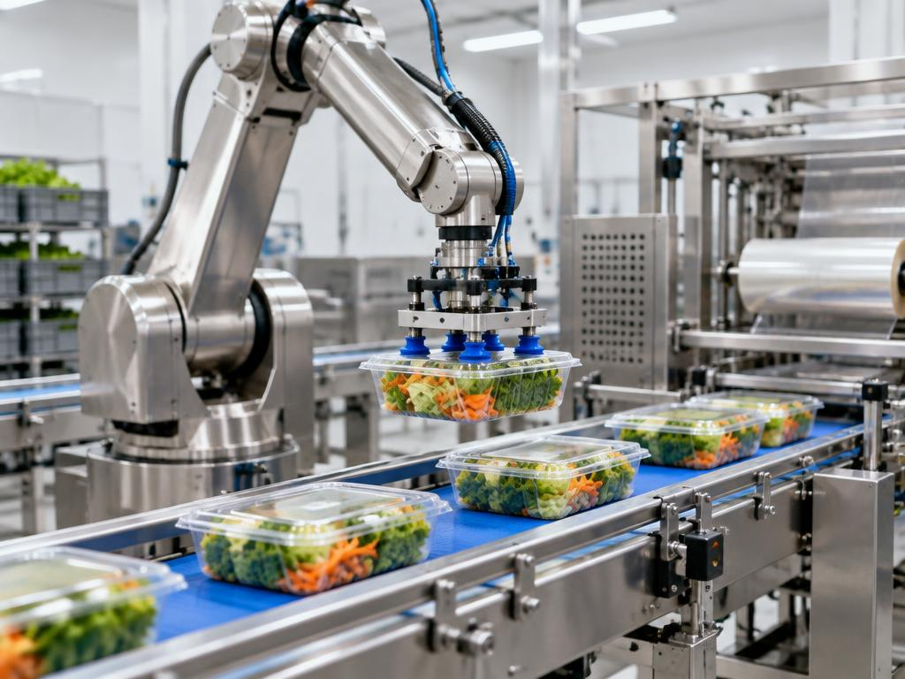
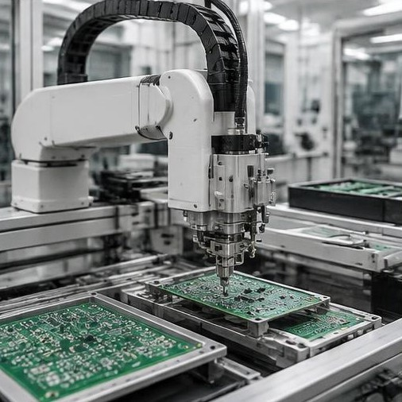
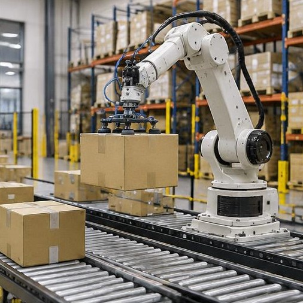

Industria automotriz
Los robots participan en soldadura, pintura, montaje de piezas y manipulación de componentes en la fabricación de vehículos.

Proyecto sobre robótica industrial
Automatizar, producir y transformar mediante tecnología.
La robótica industrial permite automatizar diferentes procesos de producción mediante máquinas programables capaces de realizar tareas con precisión, velocidad y repetitividad. En esta página mostramos cómo los robots están transformando las fábricas y distintos sectores industriales.

¿Qué es?
La robótica industrial es una rama de la tecnología que utiliza robots programables para realizar tareas dentro de procesos de fabricación y producción.
Estos sistemas pueden encargarse de actividades como soldadura, montaje, pintura, manipulación de materiales, empaquetado y control de calidad. Su principal objetivo es aumentar la productividad, mejorar la precisión y facilitar tareas que pueden ser repetitivas o peligrosas para las personas.
La robótica industrial combina máquinas, programación, sensores y personas para hacer más eficientes los procesos de producción.

Aplicaciones
Los robots industriales pueden utilizarse en numerosos sectores para automatizar procesos, aumentar la productividad y mejorar las condiciones de trabajo.
Los robots participan en soldadura, pintura, montaje de piezas y manipulación de componentes en la fabricación de vehículos.

Se utilizan robots para clasificar, transportar, empaquetar y organizar productos dentro de las plantas de producción.

Los robots pueden realizar tareas de ensamblaje, manipulación de componentes pequeños y control de calidad con gran precisión.

Un ejemplo real
En una fábrica, diferentes robots pueden trabajar dentro de una misma línea de producción. Cada máquina recibe instrucciones específicas y utiliza sensores para realizar una tarea determinada.
Por ejemplo, un producto puede ser transportado por una cinta, identificado por un sensor, manipulado por un robot y finalmente enviado a una estación de control de calidad.

Beneficios
La incorporación de robots puede modificar la forma en que se organizan los procesos industriales y permitir que las personas se concentren en tareas de supervisión, programación, mantenimiento y toma de decisiones.
Los robots pueden repetir movimientos con gran exactitud.
Permiten automatizar procesos y trabajar de manera continua.
Pueden realizar tareas peligrosas o difíciles para una persona.
Las tareas repetitivas pueden ser realizadas automáticamente.
Los robots pueden ser programados para realizar diferentes procesos.
Sensores y sistemas automatizados pueden ayudar a detectar errores.
Un robot puede ejecutar una misma secuencia muchas veces.
Los robots pueden transportar y organizar materiales y productos.
La robótica impulsa nuevas formas de diseñar y producir.
En la práctica
Futuro
La IA permite desarrollar sistemas capaces de analizar información y adaptarse a diferentes situaciones.
Sensores y dispositivos conectados permiten recopilar información de las máquinas y procesos.
Permiten diseñar y probar procesos industriales antes de implementarlos físicamente.
Los robots colaborativos están diseñados para trabajar junto a las personas en determinadas tareas.
La combinación de robótica, inteligencia artificial, sensores, datos y automatización está impulsando nuevas formas de producción. El objetivo es desarrollar fábricas más conectadas, flexibles y capaces de responder a diferentes necesidades.

Galería
Imágenes ilustrativas generadas con IA de robots y procesos industriales.
Elegí una opción para conocer cómo se aplica en la industria.
Elegí una función para ver su explicación acá.
Contacto